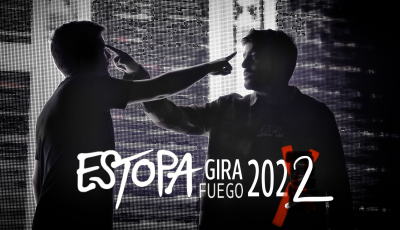

Noticias de Actualidad
Estopa se une a Fito y Fitipaldis en una nueva versión de "Camiseta de Rokanrol"
Estopa y Fito y Fitipaldis mezcla mejor que bien, y si el tema que los conecta se llama Camiseta de
rokanrol la cosa cobra sentido y gana tensión. Es en efecto la canción elegida por los de Cornellá
para unir sus fuerzas con una de las bandas de rock más relevantes que ha dado la música en España.
El resultado es una vuelta de tuerca —por supuesto, en clave de rock— del tema incluido en Fuego, su
álbum de 2019.
Para más contenido

Estopa anuncia segunda fecha en el Wizink Center de Madrid
Tras colgar el cartel de SOLD OUT en su concierto del día 30 de septiembre. Estopa amplía un día más
su cita en el Wizink Center de Madrid con un nuevo concierto el próximo 1 de octubre. Las entradas
para esta nueva fecha ya están a la venta. Con esta ampliación, Estopa quiere facilitar que ningún
seguidor madrileño se quede sin disfrutar de la Gira Fuego, que fue retrasada en 2020 por la
pandemia.
Para más contenido
Ya disponible “El madero”, tema principal de la nueva temporada de “Los hombres de
Paco”
“Los hombres de Paco” están de vuelta. La exitosa serie de Antena 3, producida por Atresmedia en
colaboración con Globomedia (THE MEDIAPRO STUDIO), que se convirtió en todo un fenómeno alcanzando
los 117 capítulos y un total de nueve temporadas, podrá verse próximamente en el prime time de la
cadena y también en ATRESplayer PREMIUM. Los hermanos Muñoz interpretan El Madero, el tema principal
de “Los hombres de Paco” que sonará tanto en la cabecera como en los títulos de crédito de los
nuevos capítulos. Es una canción secuela en la que ofrecen con maestría otro punto de vista de un
viejo tema, “El Yonki”. En esta ocasión, la canción se explica desde el punto de vista del “madero”.
“Los hombres de Paco” regresan manteniendo la esencia de la serie. Esta nueva etapa arranca con los
Pacos de siempre, pero con un giro importante que marcará un antes y un después en la historia de
los protagonistas. Un elenco de protagonistas, que vuelven interpretados por los míticos actores que
ya se pusieron en la piel de aquellos policías de barrio entrañables y desastrosos que se hicieron
un hueco en el corazón del público.
Para más contenido